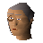

Curator

| Config name | curator |
| NPC id | 646 |
| Combat level | hidden |
| Options | Talk-to |
| Wander range | 5 tiles from spawn |
| Area folder | area_varrock |
| Defined in | scripts/areas/area_varrock/configs/varrock.npc |
Curator
He runs the museum.
Show all 1 spawn on the world map → Open in knowledge graph →
Locations
| Area | Coordinates | Level | Count | Map |
|---|---|---|---|---|
| Palace | 3255, 3445 | 0 | 1 | view |
Dialogue
CuratorWelcome to the museum of Varrock.
PlayerI have been given this letter by an examiner at the Dig Site. Can you stamp this for me?
CuratorWhat we have here? A letter of recommendation indeed...
CuratorNormally I wouldn't do this... But in this instance I don't see why not.
CuratorThere you go, good luck student... Be sure to come back and show me your certificates. I would like to see how you get on.
PlayerOkay, I will. Thanks, see you later.
PlayerLook what I have been awarded.
CuratorWell that's great, well done. I'll take that for safekeeping; come and tell me when you are the next level.
PlayerLook, I am level 2 now...
CuratorExcellent work! I'll take that for safe keeping, remember to come and see me when you have graduated.
PlayerLook at this certificate, curator...
CuratorWell, well - a level 3 graduate! I'll keep your certificate safe for you. I feel I must reward you for your work...
CuratorWhat would you prefer: something to eat or drink?
PlayerSomething to eat please.
CuratorVery good! Come and eat this cake I baked!
CuratorCertainly, have this...
PlayerA cocktail?
CuratorIt's a new recipe from the gnome kingdom. You'll like it I'm sure!
PlayerCheers!
CuratorCheers!
PlayerI have retrieved the shield of Arrav and I would like to claim my reward.
CuratorThe shield of Arrav? Let me see that!
The curator peers at the shield.
CuratorThis is incredible!
CuratorThat shield has been missing for over twenty-five years!
CuratorLeave the shield here with me and I'll write you out a certificate saying that you have returned the shield, so that you can claim your reward from the King.
PlayerCan I have two certificates? I needed significant help from a friend to get the shield. We'll split the reward.
CuratorYes, certainly. Please hand over the shield.
You hand over the shield parts.
The curator writes out two certificates.
CuratorTake these to the king and he'll pay you both handsomely. Please tell your friend to speak to me after giving him his certificate.
PlayerI have half the shield of Arrav here. Can I get a reward?
CuratorWell it might be worth a small reward. The entire shield would be worth much more.
PlayerOk, I'll hang onto it. And see if I can find the other half.
PlayerHave you any interesting news?
CuratorNo, I'm only interested in old stuff.
PlayerDo you know where I could find any treasure?
CuratorLook around you! This museum is full of treasures!
PlayerNo, I meant treasures for ME.
CuratorAny treasures this museum knows about it goes to great lengths to acquire.
CuratorNo, I don't want it back, thank you.
Referenced in scripts
scripts/areas/area_varrock/scripts/curator.rs2scripts/areas/area_varrock/scripts/king_roald.rs2